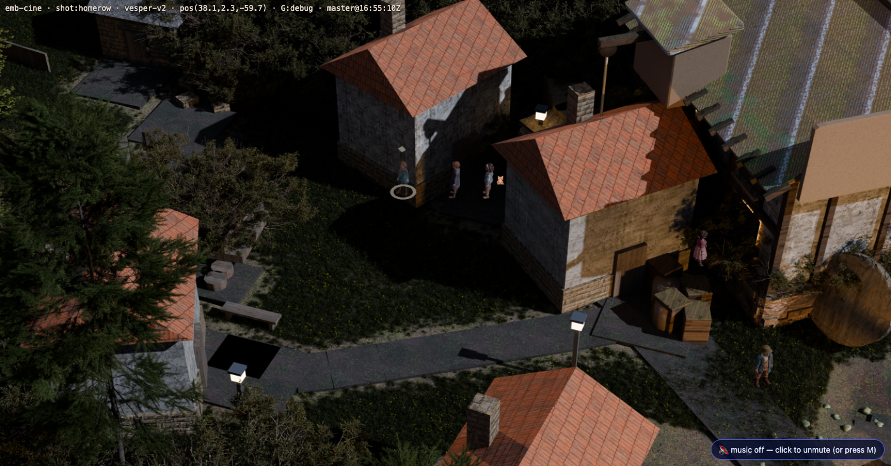
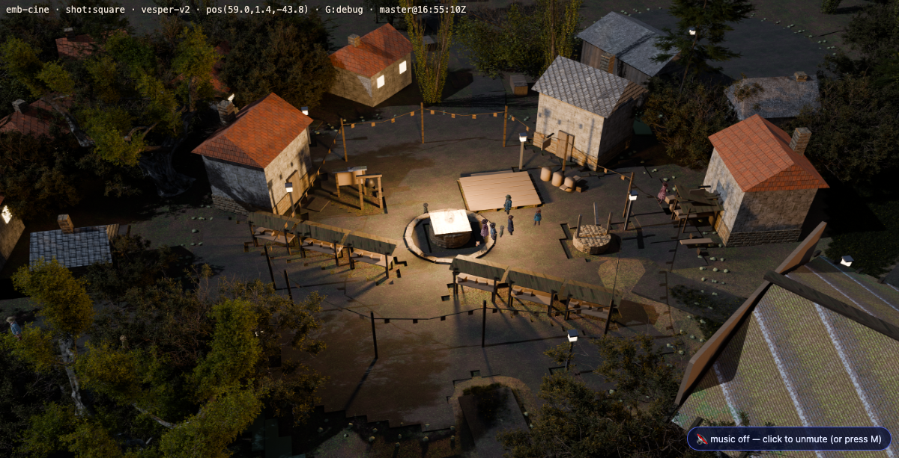
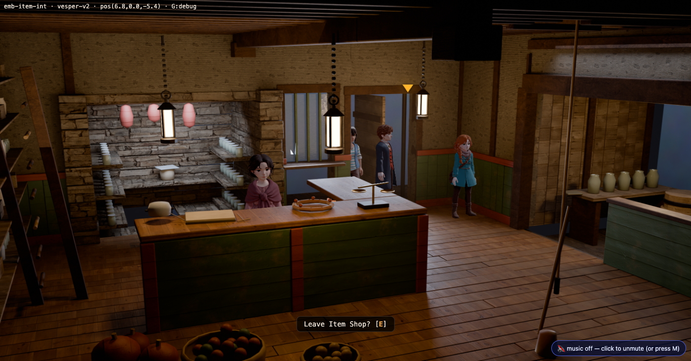

Followers
The party and the cat trail the leader — in towns, not the overworld ·
public/js/followers.js · captured 2026-08-03
It is a breadcrumb trail, not a pathfinder. The leader's own recent positions are
recorded on the physics tick and each follower is drawn a fixed arc length back along that
polyline. Every crumb is somewhere walkStep() already let a body stand, so a
follower cannot get stuck, cannot need a nav query, and cannot disagree with WALKLOCK.
collide, walkRef or
allMeshes, and play3d's blocked() tests collide and
nothing else. A follower that could push the player off a ledge would be worse than no
follower; this is the line that makes it impossible.


Who follows
| who | from | body |
|---|---|---|
| Lake | GS.activeParty() · lake-joined (ch1.meet) | lake-v1.glb |
| Maren | GS.activeParty() · maren-joined (ch2.landing) | maren-v1.glb |
| Mochi | not a party member — story.ch1.pact | the npcs.json plate |
Only Vesper, Lake and Maren are playable and only they have bodies here. The leader must
himself be in the active party, which is what keeps Chapter One's Lake POV solo: during
ch1.lake.* the flag is not set yet, so the roster is empty and Vesper does not
follow Lake round his own cottage. It falls out of the data, not out of a scene name.
The posted cats stand down while Mochi follows. mochi at the Dellhollow eel
stall and mochi-emb at the Emberbrook waystone are the same animal; a cat at your
heel and a second one at the stall is a duplicate a player reads as a bug. New
Npc.hide(id, on), page-level so it survives a doorway.
Two things measured that changed the code
- A teleport is not a walk. A sample further than 2.2 m re-seeds the trail — and the
re-seed snaps the bodies. Without the snap the speed cap applied to the catch-up too,
and after a
SIM.tp()the party was seen sprinting across the town: measured at 30 m and still closing. - The doorway huddle, above.
Turn them off for a measurement: play3d.html?...&nofollow=1.
Live state: Followers.debug() / Followers.list().